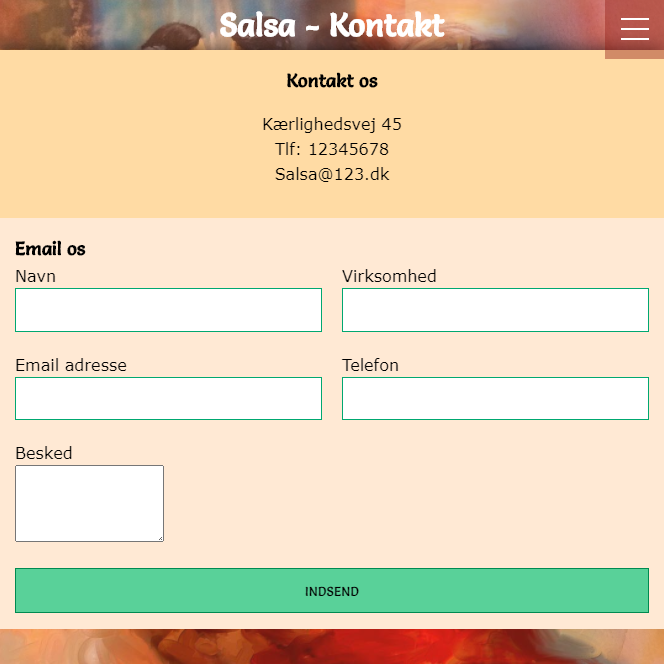

Studieprojekt:
Hjemmeside for et bilmærke. I dette projekt skulle jeg lave hjemmesiden om til desktop fra mobil.
Jeg har kodet en side, hvor min studiegruppe har kodet de resterende. Jeg har arbejdet med Adobe XD
for at lave wireframes og mockups. Jeg har også lavet en contentplan og indholdskalender.
Studieprojekt:
Hjemmeside for et bilmærke til mobil.
Jeg har brugt Adobe XD til at lave et wireframe og et mockup.
Jeg har udarbejdet personaer.

Studieprojekt:
Hjemmeside for en danskeskole til desktop.
Jeg har brugt tid på design thinking og lavet et moodboard.
Hjemmesiden fungerer både på desktop og mobil.
Studieprojekt:
Hjemmeside for en danskeskole til mobil.
Jeg lavede en sketch til hvordan hjemmesiden skulle se ud. Jeg lavede personaer ud fra vores målgruppe.
Jeg har sammen med min studiegruppe arbejdet med idegenerering.
Studieprojekt:
Hjemmeside til folk som er interesseret i rumrejser.
Her har jeg arbejdet med ideer til siden, design og et koncept.
Jeg har redigeret billeder i Adobe Photoshop.
Studieprojekt:
Videoportræt. Jeg har arbejdet med professionelt kamera
og lyd. Jeg har redigeret videoen i Adobe Premiere.